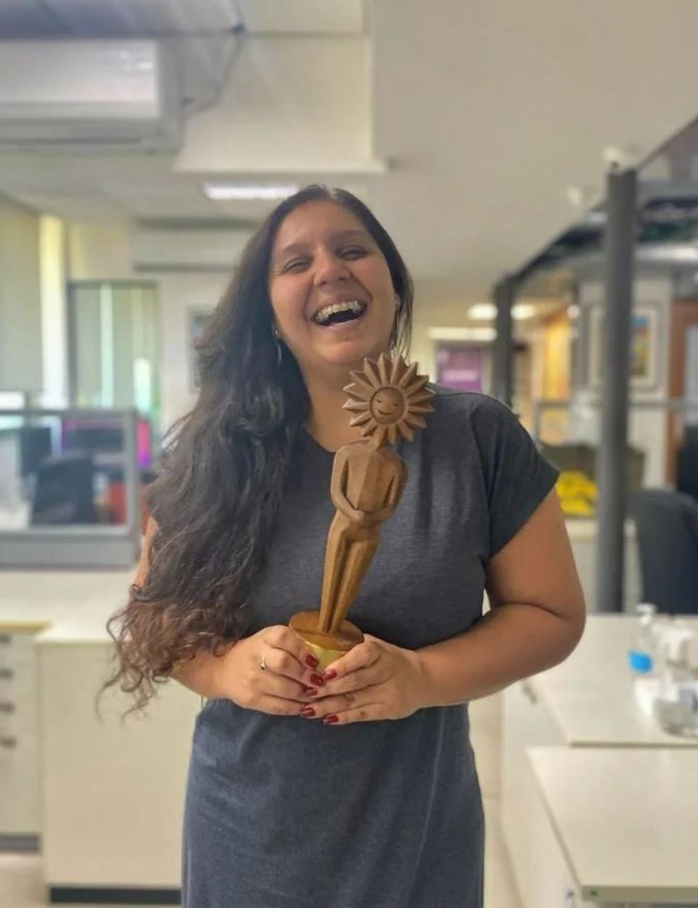
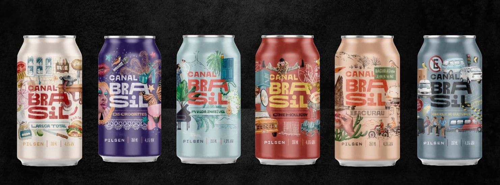
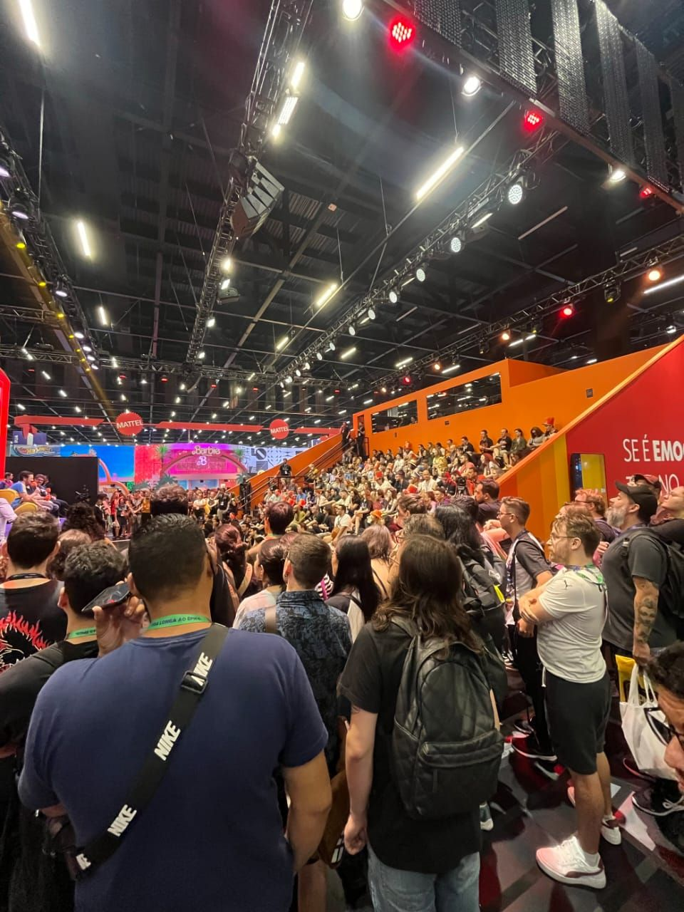
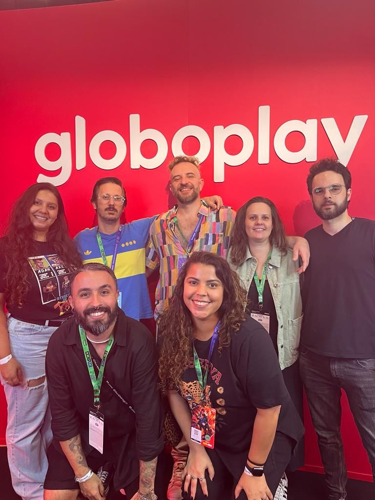
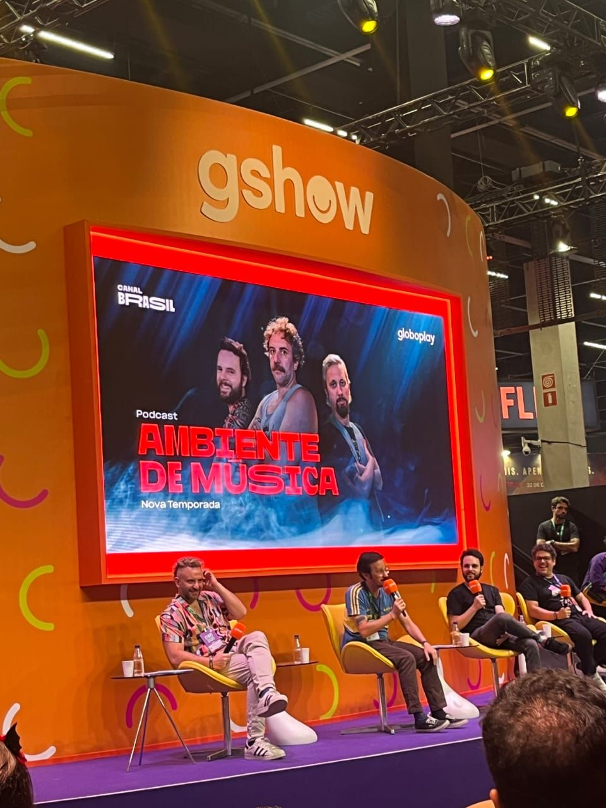

Quem é Aline Junqueira
Aline nasceu em 1989 no Rio de Janeiro, Apaixonada por animais, meio ambiente, tons de roxo, cerveja, games e rock. Na infância sonhava em ser bióloga ou ser da área de comunicação de uma grande empresa.
Começou a se interessar por tecnologia por influência dos pais e de videogames e no ensino médio resolveu fazer técnico em informática e pretendia fazer graduação na mesma área mas acabou seguindo sua aspiração infantil e foi cursar publicidade e logo depois marketing.
Atuando na área de comunicação há 12 anos, há 9 anos faz parte do time de marketing do Canal Brasil, Joint Venture do Grupo Globo, nunca deixou a tecnologia de lado.
Trabalho
Fazendo parte da equipe de marketing do Canal Brasil tem a oportunidade de atuar em diversos projetos, recentemente foi uma das reponsáveis pelo rebrading da Cerveja Canal Brasil. Com seis rótulos colécionáveis a cerveja homenageia grandes produções do canal, como Cine Holliúdy, Larica Total, Choque de Cultura e outros.
Em 2023, foi uma das responsáveis pelo painel do Choque de Cultura na CCXP. No painel os meninos falaram sobre o processo criativo do podcast Ambiente de Música.
  Expectativa
Minha expectativa após a participação na oficina Cloud Girls é poder fazer parte de outros eventos e mentorias para ampliar a minha área de atuação, unindo a programação ao marketing e alavancando minha carreira.